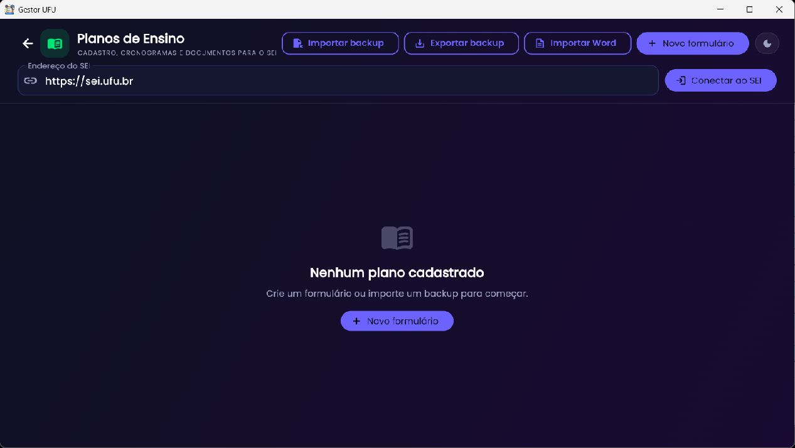
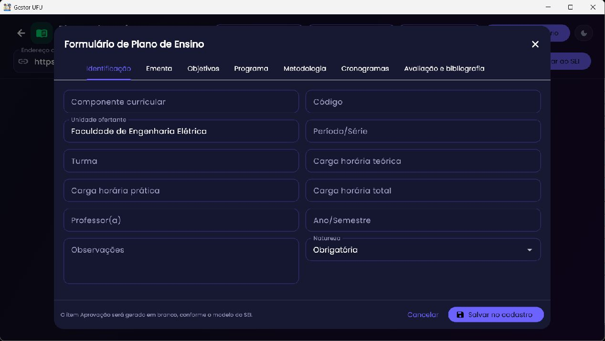
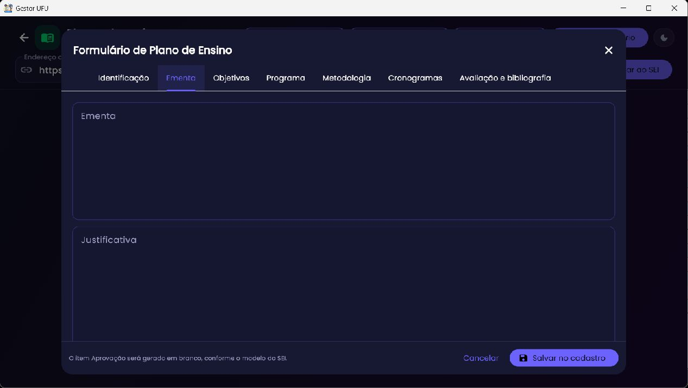
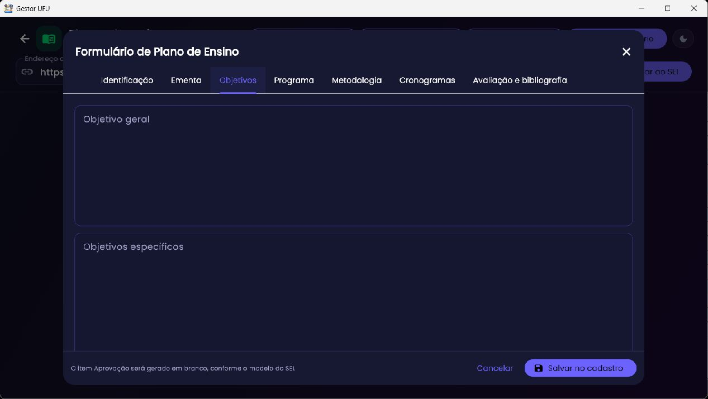
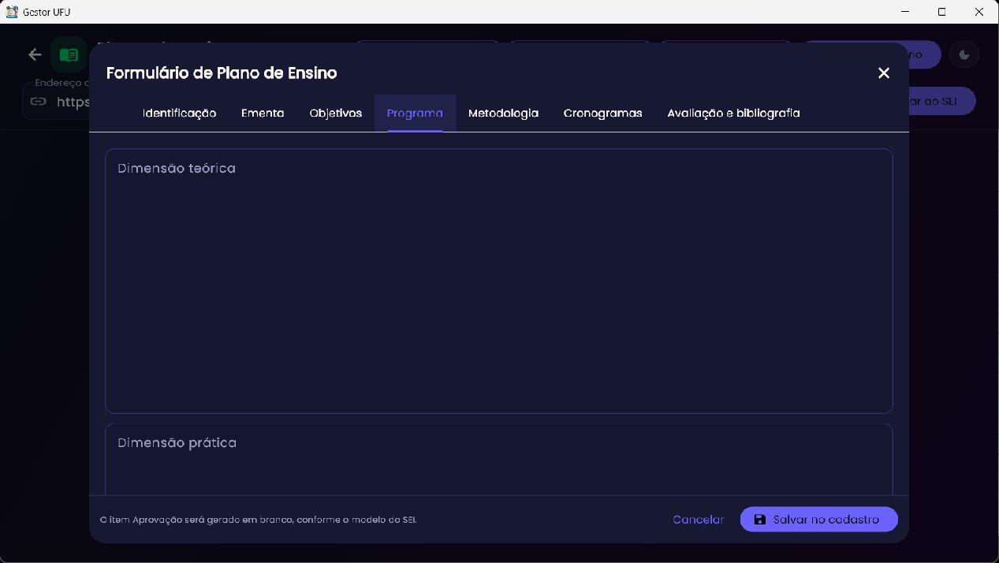
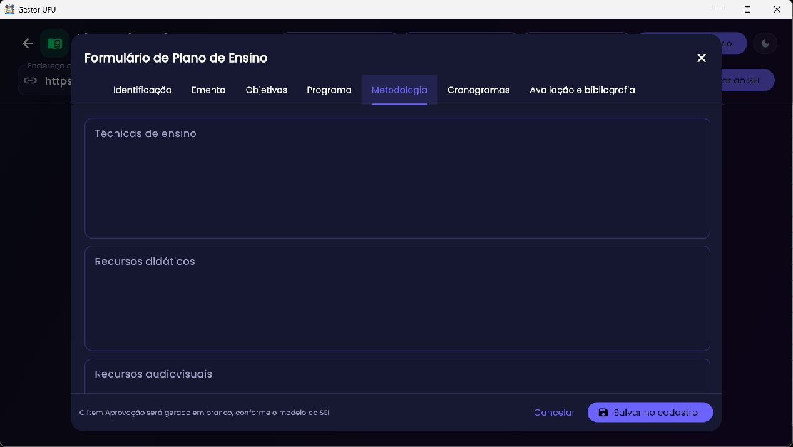
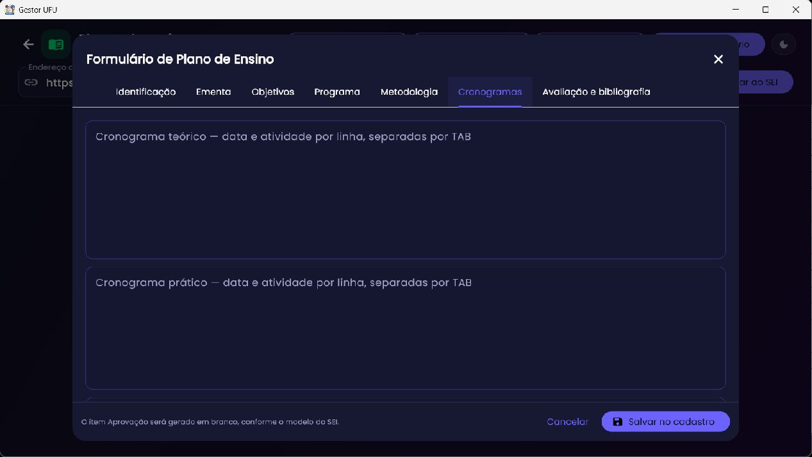
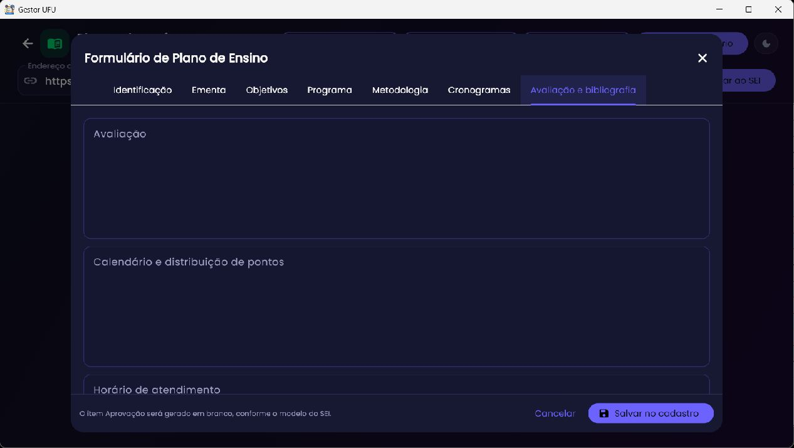

Ensino · cronogramas · documentos SEI
Planos de Ensino
Cadastre versões de planos por componente curricular, revise o formulário e seus cronogramas, exporte uma cópia Word ou insira conteúdo no SEI.

Criar, abrir e manter planos
Selecione Novo formulário para iniciar um plano. A lista mostra os planos salvos; selecione um para exibir suas ações. No cartão, os ícones permitem inserir no SEI, exportar Word (.docx), editar e remover (com confirmação). Importe um arquivo Word ou backup existente quando precisar recuperar trabalho.
As configurações têm armazenamento local do Gestor. Faça backup antes de importar/substituir e confira qual versão do plano está selecionada. O campo Endereço do SEI fica guardado para a próxima abertura.
Preencher o formulário

O formulário reúne as abas Identificação, Ementa, Objetivos, Programa, Metodologia, Cronogramas e Avaliação e bibliografia. Preencha os dados oficiais do plano, confira código e carga horária e evite deixar campos obrigatórios em branco. Use textos revisados e consistentes com o componente. O item “Aprovação” é gerado em branco conforme o modelo do SEI.






Importar cronograma do Moodle ou colar tabela
O botão de extrair dados do Config Moodle abre a lista de configurações salvas; selecione a disciplina. Depois escolha como aplicar os dados. O conteúdo selecionado é filtrado para produzir itens de aulas com datas e descrição. Também é possível colar uma tabela completa Moodle/Excel em TSV e acionar Aplicar tabela colada. Faça a prévia e confira datas, modalidade e descrição; blocos semanais ou linhas de cabeçalho não devem virar aula.
- Salve previamente a configuração/cronograma no Config Moodle.
- No plano, abra a importação pelo Config Moodle e selecione o curso correto.
- Escolha mesclar ou substituir conforme a mensagem: mesclar conserva o existente e substitui chaves equivalentes; substituir troca a lista.
- Revise as linhas teóricas e práticas e corrija datas/descrições no formulário.
- Para colagem manual, copie a tabela do Moodle/Excel incluindo cabeçalho e cole no campo TSV.
- Aplique e confira a filtragem em formato de aula antes de salvar.
Backup e Word
Exportar backup preserva os planos no formato próprio; Importar backup recupera dados anteriores. Importar Word reaproveita documento suportado, mas confira o mapeamento/resultado porque arquivos com estrutura muito diferente podem não preencher todos os campos. Exportar Word cria um documento editável para revisão; abra-o e confira a formatação antes de entregar.
Inserir no SEI
Abra o endereço SEI pelo fluxo disponível e autentique-se manualmente no Edge. Deixe aberto o processo e o editor/documento modelo apropriado. Selecione a ação Inserir no SEI no plano e revise o diálogo de confirmação. A implementação usa mesclagem do conteúdo aos campos/modelo HTML aberto, preservando a estrutura nativa conhecida; confirme o resultado diretamente no SEI antes de salvar ou assinar.
Erros comuns
- Plano não aparece: confirme que selecionou a configuração correta ou importe o backup.
- Cronograma vazio: salve primeiro os dados no Config Moodle; os itens precisam conter datas e conteúdo de aula.
- Texto colado ficou como uma coluna: copie com TAB entre colunas (TSV) e mantenha uma linha por aula.
- Inserção não encontra editor: faça login, abra o processo e o formulário/documento do SEI antes de acionar a automação.
Relacionado: Config Moodle para cronogramas; Preenche Diários para converter aulas datadas em lançamentos.